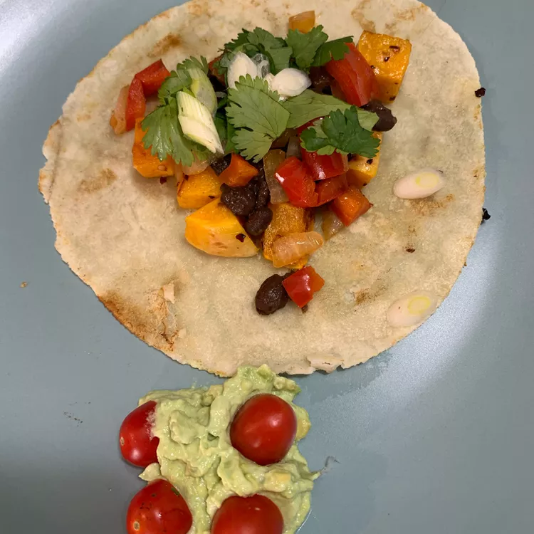

Butternut Squash Tacos
Home

Description
Butternut squash makes for a great taco filling, whether you're eating clean or meat-free. A little garlic and some red pepper flakes make the flavors pop.
Ingredients
- ½ butternut squash - peeled, seeded, and cut into 1-inch cubes
- 2 tablespoons vegetable oil, divided
- 2 teaspoons red pepper flakes
- 2 cloves garlic, chopped
- 1 (15.5 ounce) can black beans, drained
- 1 teaspoon cumin
- 1 teaspoon chili powder
- 1 pinch salt
- 1 yellow onion, chopped
- 1 red bell pepper, chopped
- 8 (6 inch) flour tortillas
- ½ cup chopped green onions
- ½ cup chopped cilantro
- 1 lime, sliced
Steps
- Preheat oven to 375 degrees F (190 degrees C).
- Combine cubed squash, 1 tablespoon oil, red pepper flakes, and garlic in a large bowl; mix to coat. Spread out on a baking sheet.
- Roast in the preheated oven until squash is tender, about 25 minutes. Remove from oven.
- Combine black beans, cumin, chili powder, and salt in a small saucepan. Heat over medium-low heat until flavors combine, about 10 minutes.
- Heat remaining 1 tablespoon oil in a large skillet over medium-high heat. Add onions and red bell pepper; cook and stir until tender, 5 to 10 minutes.
- Heat a large skillet over medium heat. Place 2 tortillas in the skillet and cook until heated through, about 1 minute per side. Repeat with remaining tortillas.
- Top tortillas with baked squash, black beans, and onion-red pepper mixture. Garnish with green onions, cilantro, and lime.